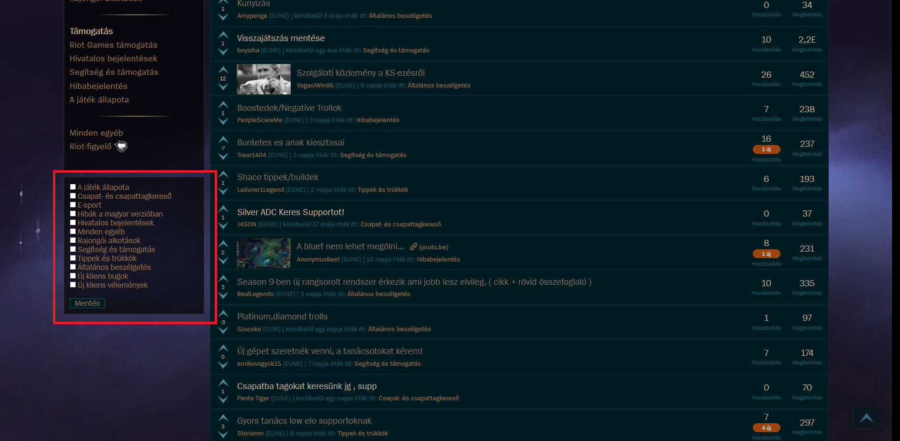
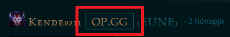
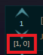
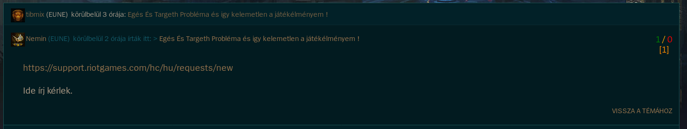
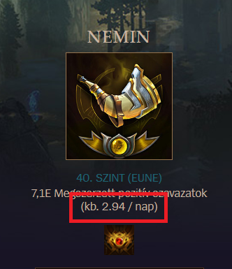

- Boardsupdate
- Filter
- Opgg
- Signiture
- Blocklist
- Upsdowns
- Topicpoints/Commentpoints
- Average
- Notification
- Reportbutton
- Endless
- Ranks
REDESIGN

Talán a legnagyobb volumenű kiegészítőm. Használatával a fórum megkapja a nyugati kinézetét, új színvilággal és háttérképpel. Némi kódbogarászással pedig személyre is szabható.
FILTER
A kiegészítő segítsgévével kiszűrheted azokat az alfórumokat a főoldalról, melyek fölöslegesek / nem érdekelnek.
OPGG
A játékosok neve mellé tesz egy gombot, melyre rákattintva rögtön az OP.GG oldalára juthatsz.
BLOCKLIST
A tiltólistára helyezett személyek posztjai nem jelennek meg a főoldalon és a kommentjeik automatikusan össze vannak csukva kommentnézetben.
UPSDOWNS
Megmutatja egyes posztokon/kommenteken valójában milyen szavazatok is vannak, ezen kívül ki is színezi őket állásuk alapján. (Az alternatív színsémáért olvasd el a Githubos leírást.)
TOPICPOINTS/COMMENTPOINTS
Az UPSDOWNS-hoz hasonlóan ez is megmutatja egy posztod/kommented pontosan hány föl- és leszavazást kapott.
AVERAGE
Kiszámolja az átlagos napi kommenteléseid számát a fórumon töltött napjaid és a kommentjeid hányadából.